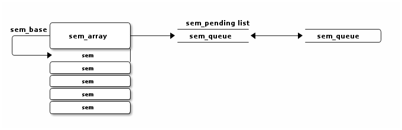

SYSTEM V SEMAPHORE
Table of Contents
1 The Relase Between Structs
1.1 Basic Structs
struct sem_array {
struct kern_ipc_perm ____cacheline_aligned_in_smp
sem_perm; /* permissions .. see ipc.h */
time_t sem_otime; /* last semop time */
time_t sem_ctime; /* last change time */
struct sem *sem_base; /* ptr to first semaphore in array */
struct list_head sem_pending; /* pending operations to be processed */
struct list_head list_id; /* undo requests on this array */
int sem_nsems; /* no. of semaphores in array */
int complex_count; /* pending complex operations */
};
struct sem {
int semval; /* current value */
int sempid; /* pid of last operation */
struct list_head sem_pending; /* pending single-sop operations */
};

2 Code Analysis